Project 5: Fun with Diffusion Models
Part 0: Setup and Playing with my own Text Prompt
This part sets up the environment and plays with my own text prompt. We can observe that for prompts that are too abstract or OOD, the generated images are not very good. However, for prompts that are more specific and in-domain, the generated images are much better. The seed chosen is here is 100 for reproducibility.
The first row shows the generated image with a inference step of 50, while the second row shows the generated image with a inference step of 100.
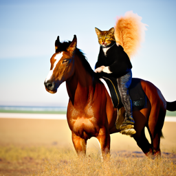
"a cat riding a horse", step 50
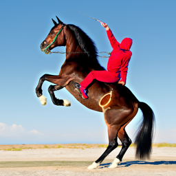
"a horse riding a cat", step 50
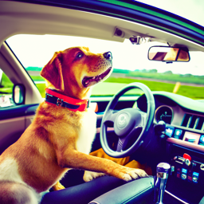
"a dog driving a car", step 50
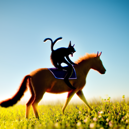
"a cat riding a horse", step 100
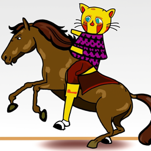
"a horse riding a cat", step 100
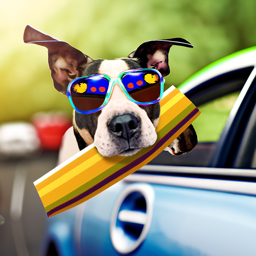
"a dog driving a car", step 100
Part 1.1 and Part 1.2: Forward Pass and Classical Denoising
Part 1.1 implements the forward pass by adding noise according to the noise schedule. The formula used for the forward pass is given by:
Part 1.2 implements the classical denoising by simply passing the noisy images through a gaussian filter. The comparison and the results from part 1.1 are shown below. images are taken at time steps 250, 500, 750.
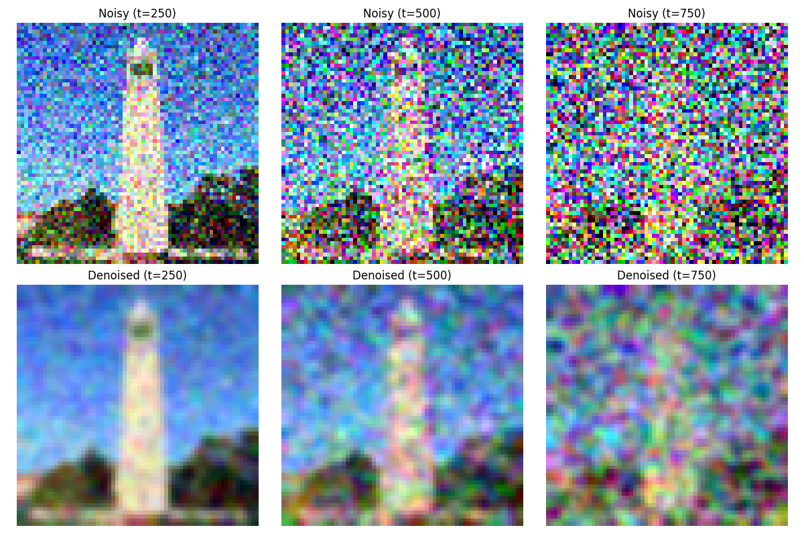
Forward Pass Comparison
Part 1.3: One-Step Denoising
This part implements the one-step denoising by passing the noisy images through a trained denoising model. The denoising model is a simple MLP that takes in the noisy images and outputs the denoised images. We separately denoise the images at time steps 250, 500, 750.
t = 250:
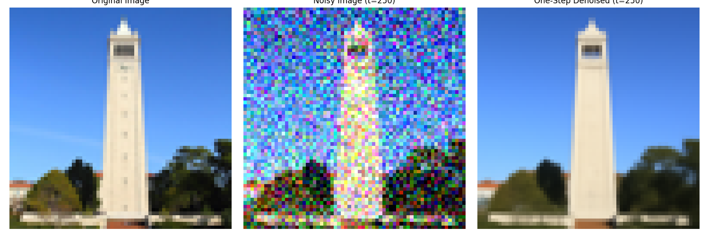
One-Step Denoising at Time Step 250
t = 500:
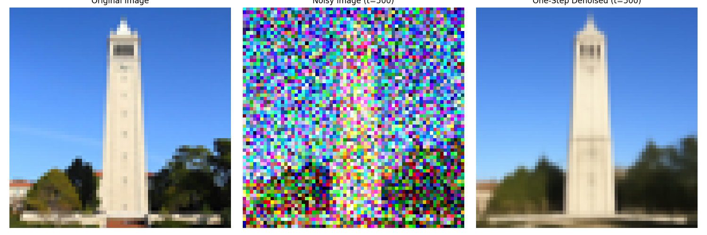
One-Step Denoising at Time Step 500
t = 750:
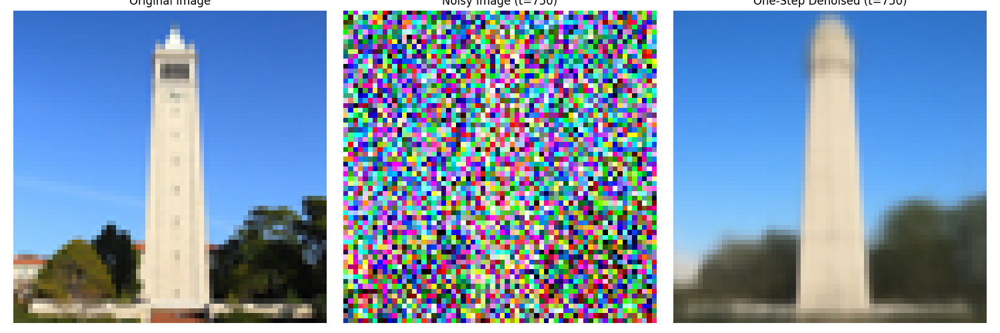
One-Step Denoising at Time Step 750
Part 1.4: Iterative Denoising
While the quality of the one-step denoising is not very good, we can improve it by iterating the denoising process. The iterative denoising process is implemented by passing the noisy images through the denoising model multiple times. We separately denoise the images at time steps 250, 500, 750. The formula for iterative denoising is given by:
We show the noisy Campanile image during the iterative denoising process.
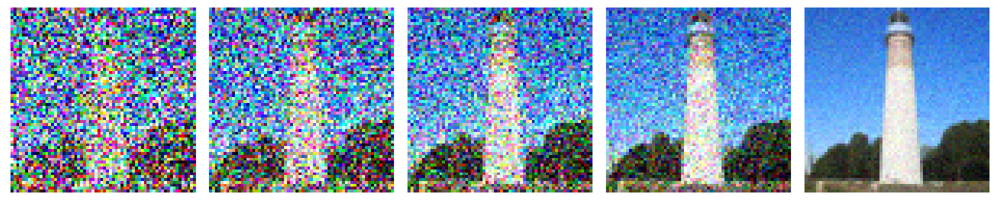
Iterative Denoising Process
Here is a comparison between the classical denoising, the one-step denoising and the iterative denoising.
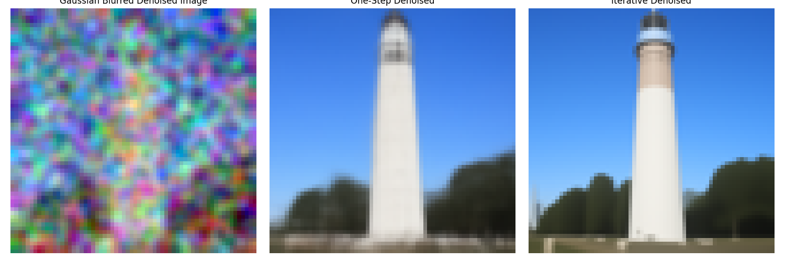
Comparison between the Classical Denoising, the One-Step Denoising and the Iterative Denoising
Part 1.5: Diffusion Model Sampling
Here are five sampled images from the diffusion model with the prompt "a high quality photo."
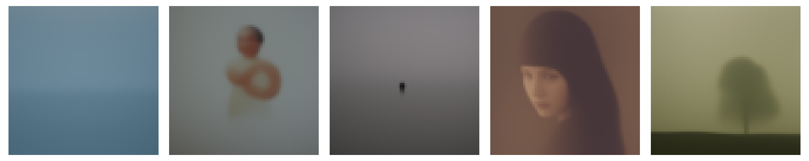
Diffusion Model Sampling
Part 1.6: Classifier-Free Guidance
This part implements the classifier-free guidance by estimating the noise with the following formula:
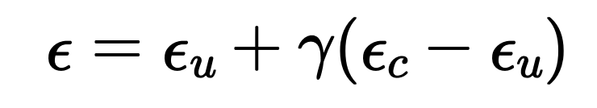
Classifier-Free Guidance
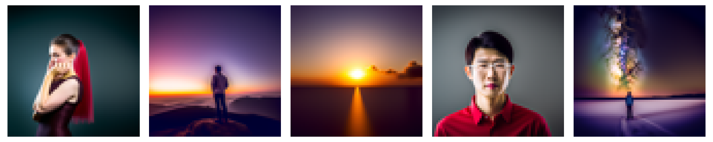
Classifier-Free Guidance
Part 1.7.1: Image-to-Image Translation
The following images are results from the image-to-image translation. It includes the Campanile image, a web imgae, and two hand-drawn images.
Campanile Image, i_start = 1
Campanile Image, i_start = 3
Campanile Image, i_start = 5
Campanile Image, i_start = 7
Campanile Image, i_start = 10
Campanile Image, i_start = 20

Campanile Image, original
Tom and Jerry, i_start = 1
Tom and Jerry, i_start = 3
Tom and Jerry, i_start = 5
Tom and Jerry, i_start = 7
Tom and Jerry, i_start = 10
Tom and Jerry, i_start = 20

Drawn Doraemon, i_start = 1
Drawn Doraemon, i_start = 3
Drawn Doraemon, i_start = 5
Drawn Doraemon, i_start = 7
Drawn Doraemon, i_start = 10
Drawn Doraemon, i_start = 20
Part 1.7.2: Inpainting
This section implements the inpainting technique. in every denoising step, we denoise the whole image. However, only the area with a mask value of 1 is kept. Other areas are reobtained in the next step from redoing the forward pass on the original image. This achieves the effect of only diffusing the masked area with the context unchanged. The following images are examples of the impainted images.

Campanile Image, Original

Campanile Image, Mask

Campanile Image, To Replace
Campanile Image, Inpainted

Dog Image, Original

Dog Image, To Replace

Charger Image, Original

Charger Image, To Replace
Part 1.7.3: Text-Conditional Image-to-image Translation
This section is very similar to the image-to-image translation task. The only difference is that in this task, we use a custom textual prompt instead of a general prompt. The following images are examples of the text-conditional image-to-image translation.

Campanile, i_start = 7

Campanile, i_start = 10

Campanile, original
Part 1.8: Visual Anagrams
This section implements the visual anagrams. In every denoising step, we predict the normal noise and we also predict the noise flipped based on the flipped prompt. We then simply flip the flipped noise back and add them together to get our final perdicted noise. The process is given by the following formula:
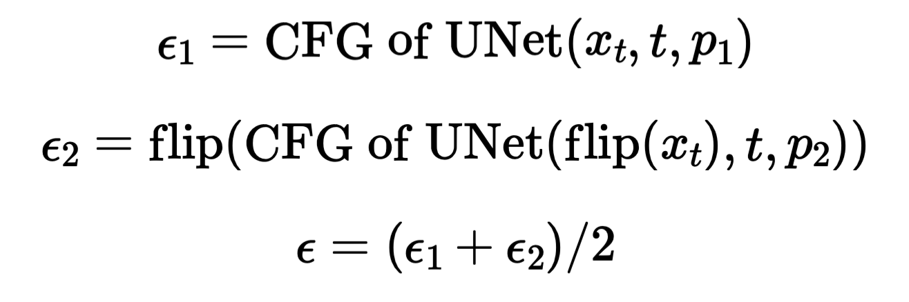
Classifier-Free Guidance
Flip Illusion, Campfire + Skull
Flip Illusion, Campfire + Skull
Flip Illusion, Old Man + Campfire
Flip Illusion, Old Man + Campfire
Flip Illusion, Old Man + Village
Flip Illusion, Old Man + Village
Part 1.9: Hybrid Images
This section implements hybrid images. This is done by predicting noises both in the low frequency and the high frequency domains. We then add them together to get our final noise. The process is given by the following formula:
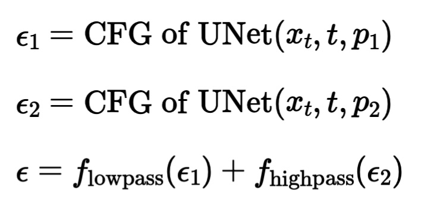
Classifier-Free Guidance
Hybrid Images, Campfire + Skull
Hybrid Images, Rocket Ship + Pencil
Hybrid Images, Skull + Waterfalls